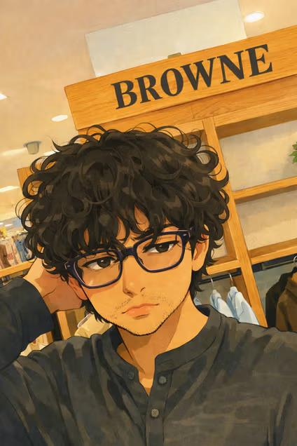

Jazz Coffee (también conocido como Ciento 11 Café y ubicado en Calle Porfirio Díaz 111 en el centro de Oaxaca de Juárez) es una cafetería y lugar para brunch con muy buenas reseñas (alrededor de 4.3⭐) donde puedes encontrar una mezcla de café, bebidas frías, sándwiches, crepas, toasts y opciones de brunch, ideal para desayunar o pasar una mañana relajada con algo rico para comer o beber; su menú incluye desde clásicos como americano, latte y frappés hasta combinaciones más creativas como espresso & tonic, y opciones saladas con pan de masa madre y bagels o sándwiches variados, lo que lo hace un lugar versátil tanto para quienes quieren solo café como para quienes buscan un brunch completo en el centro de Oaxaca.
Audio de Ciento 11


📍 Libertad 111, Oaxaca
🕒 Mon–Sat 7:00–19:00
Back to menu